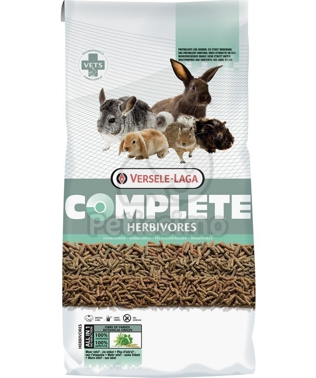
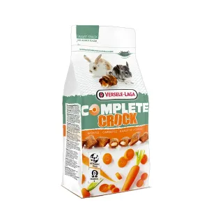
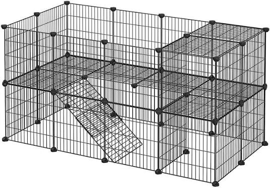
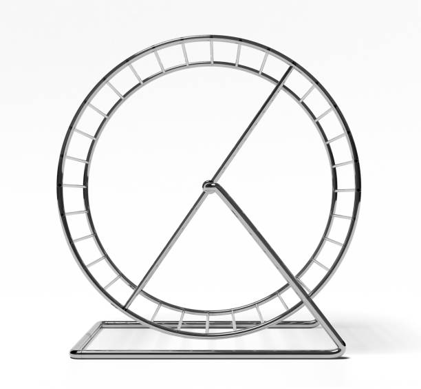
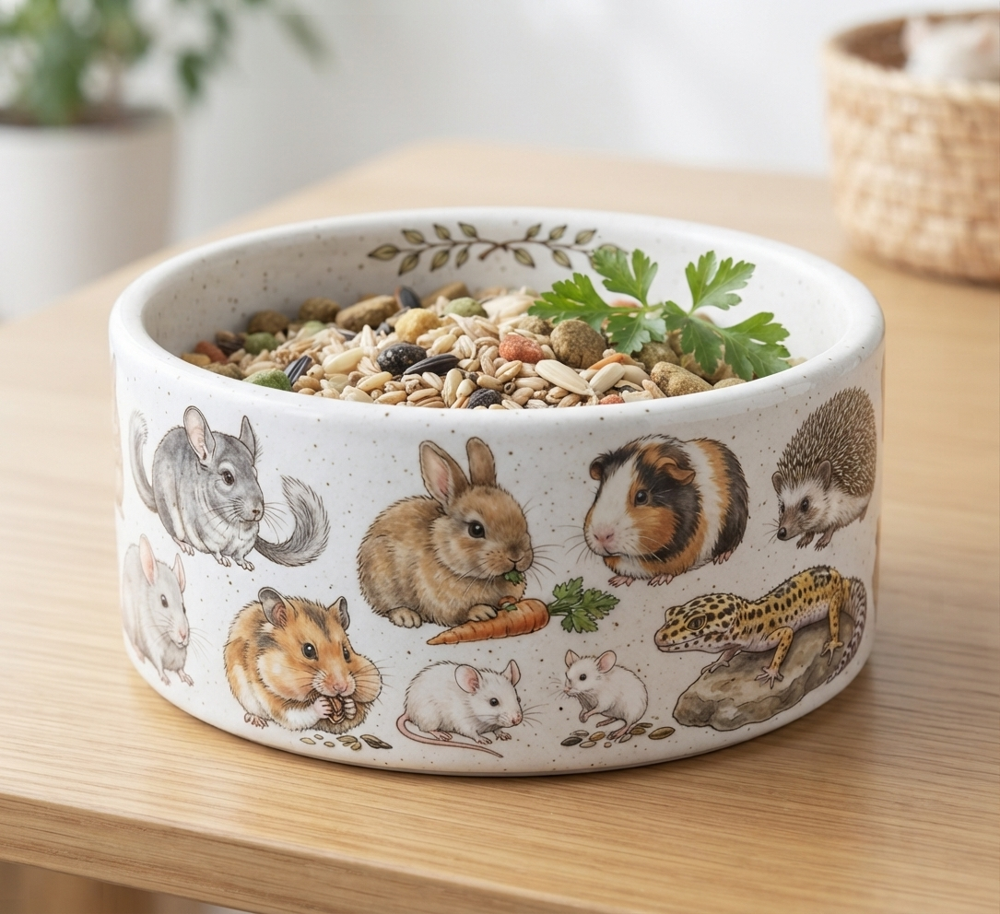
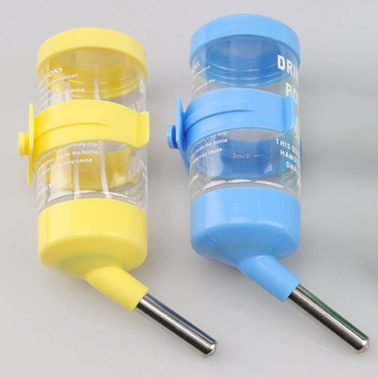

Minden, amit a kisállatokról tudni kell
A kisállatok kedves és szerethető társállatok, amelyek sok örömet és vidámságot hozhatnak gazdáik életébe. A megfelelő tartáshoz elengedhetetlen a számukra megfelelő minőségű és fajuknak megfelelő táplálék biztosítása. Étrendjük állhat például tápból, zöldségekből, gyümölcsökből, magvakból vagy szénából, az állat fajtájától és igényeitől függően. Mindig biztosítani kell számukra friss, tiszta ivóvizet. A kisállatok egészsége szempontjából rendkívül fontos a megfelelő méretű, biztonságos és tiszta élettér kialakítása. Szükségük van rendszeres mozgásra, játékra és különböző elfoglaltságokra, amelyek segítenek nekik levezetni az energiájukat és megőrizni természetes viselkedésüket. Fontos, hogy legyen egy nyugodt helyük is, ahol zavartalanul pihenhetnek és biztonságban érezhetik magukat. A felelős kisállattartáshoz hozzátartozik a rendszeres állatorvosi ellenőrzés és a megfelelő higiénia biztosítása. Az állat lakóhelyét rendszeresen tisztítani kell, az etető- és itatótálakat pedig tisztán kell tartani. Fontos továbbá figyelni az állat szőrzetére, viselkedésére, étvágyára és általános állapotára. Türelemmel, odafigyeléssel és szeretettel egy egészséges, boldog és barátságos kisállat lehet a társunk. A felelős gazdi mindig gondoskodik kedvencéről, és igyekszik biztosítani számára a fajának megfelelő, boldog és biztonságos életet.
Termékek kisállatoknak:

Kisállatok eledel
★★★★☆ 4.3
1890 FT

Kisállatok eledel
★★★☆☆ 3.8
2650 FT

Kisállatok ketrec
★★★☆☆ 3.4
8990 FT

Kisállatok játék
★★★★☆ 4.3
1450 FT

Kisállatok tálja
★★★★☆ 4.1
1250 FT

Kisállatok itató
★★★★★ 4.4
2190 FT